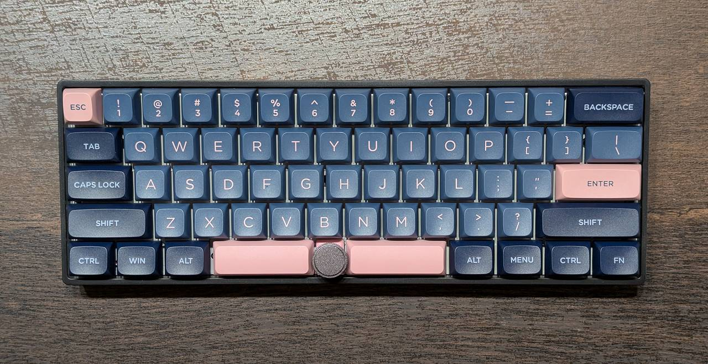

Skyloong GK61 Pro
概要
Skyloong GK61 Pro (有線版、KTT ローズピンク軸)というキーボードを試してみて気づいたことのまとめ。
特徴

- 60%サイズ、分割スペースバー、センターノブ
- USBポートの位置はEscと1の間
- 高さ調整機構なし
- キースイッチ交換可能
- キー毎にLEDあり
- QMK/VIA 両対応
- $10高い無線版は非対応
- ノブの設定には VIA が便利
- 送料込みセール価格で$60(skyloongtech.com)
- 2週間弱で到着
- ノブなしタイプ(non-Pro)はアリエクで$45程度
打鍵感
ここ4年近くずっと TTC ゴールドピンク軸(リニア37g)を使ってきたのでそれが基準になりますが、ぐらつきのなさや滑らかさなどの点で KTT ローズピンク軸(リニア38g)は同じくらい良い軸だと感じました。ただし、ストロークが前者（4㎜）と比べて短い（3.5㎜）ので個人的には（慣れていないせいか底つきがあって）打ちにくいと感じています。キーキャップのプロファイルが浅く角度も緩めなのも慣れません。
打鍵音に関して、分割スペースバーの打鍵音は周波数低めで好印象なのですが、他のキーは 1.2kHz くらいにピークを持つ音が鳴るので耳障りに感じられるかもしれません。これはキースイッチを交換しても変わらないのでハウジングの設計起因だと思われます。
ノブ
ノブはプッシュあり＆クリッキーなタイプで12ステップ/回転。バックラッシュがあるのかノブのクリックに対応して処理が飛ばないことがありました。個人的にはクリック感なしで分解能高いタイプに交換したいです。また慣れるまでスペースバーを押すときにノブに指が当たってしまって邪魔に感じました。
そのほか
スペースバーのキースイッチを抜こうとしたらやたら固かったので固定されているのかもしれません。
総評
分割スペースバー＆VIA Anyキー対応でお値段を考えると悪くないのですが、打鍵感は Royalaxe Y68 に劣るというのが正直なところ。